1
A full-power strike
Before the update the ball just leaves. After: wind-up, freeze, flash, then it goes.
Look forThe short pause at contact, the flash and ring, and the lines behind the ball. Use ¼× to see the pause.
The Oct 13 gameplay update. Shots are too strong and always aim up; keepers and team-mates feel off; the strike has no weight. Five switches fix that. Everything is off by default and pushed to branch Leo only, not live. This is a review round: please try it and answer the questions at the bottom.
A shot at power 40 felt like 60 and a 100 was “insane”, sometimes sure to go over the bar. And if you hit the side of the ball for a low curler (left wing, far post, along the floor) it flew up as if you had aimed high.
Two causes. Shots left the boot too fast at high power. And how high the ball goes only looked at how far up or down you tapped, even at the very edge of the ball, where a real side-foot strike stays low.
Shot power: a shot at goal uses a lower power number, so a 60 hits like a 40 did. Contact field: toward the edges of the ball, up/down barely matters. Same tap as the reported shot: height at the goal line 1.71 m → 0.23 m.
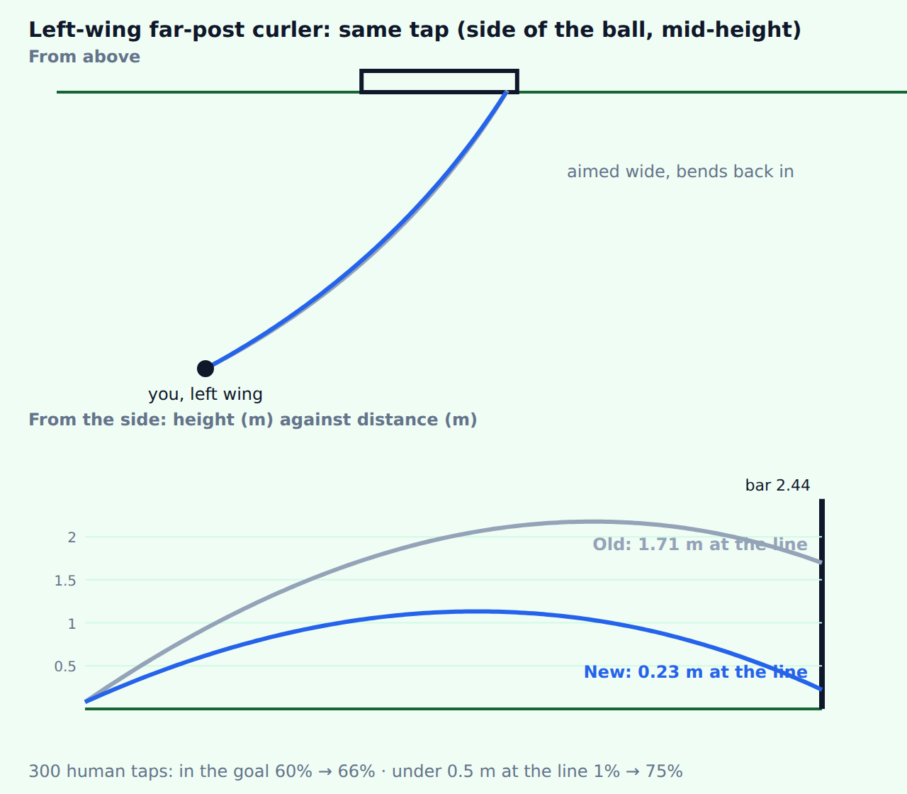
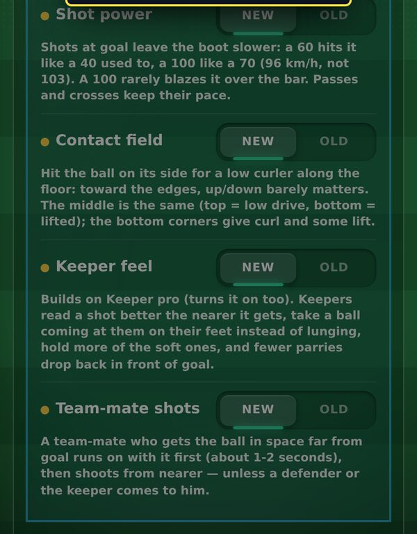
Power 40 felt like 60. Power 100 was “insane” and often went over the bar. At 100, a penalty scored 45% of the time because it was blazed over.
A shot at goal was struck with your full power number, up to 103 km/h.
Shots at goal are struck with a lower power number: a 60 hits like a 40 did, a 100 like a 70. Passes, crosses, corners and free kicks keep their pace. Your power stat still sets how long you drag. Switch: Shot power.
| Power | 20 | 40 | 60 | 80 | 100 |
|---|---|---|---|---|---|
| Before, km/h | 68 | 79 | 91 | 102 | 103 |
| After, km/h | 60 | 69 | 79 | 88 | 96 |
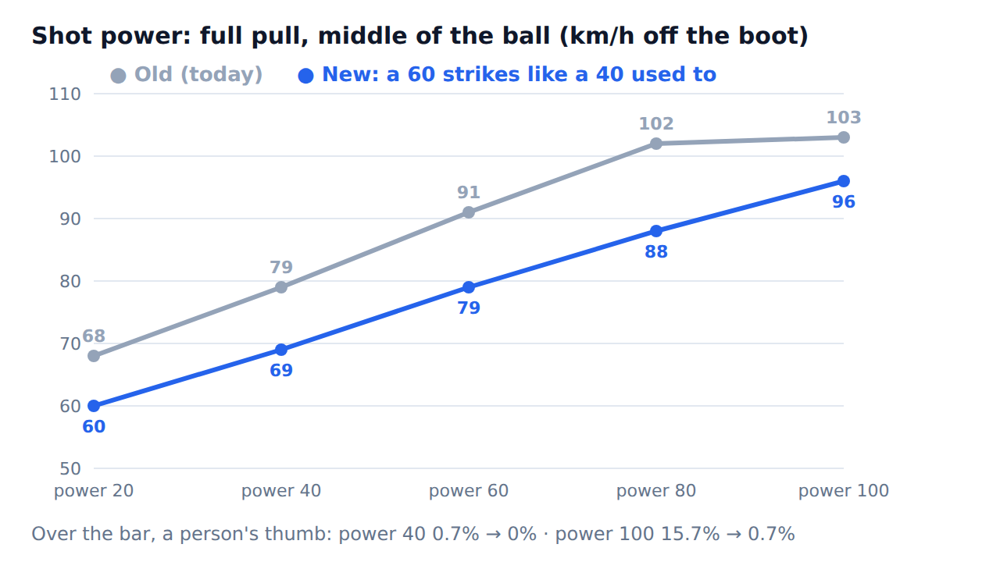
Hitting the side at mid-height read as “aim up”. The ball rose to about 2.2 m.
Height followed only how far up or down you tapped. The edge of the ball counted like the middle.
Toward the edges, up/down barely matters, so the side gives a low curler. The middle is unchanged. The bottom corners give curl plus some lift. The strike screen says CURLER (with Shots set to New) and shows faint height lines that fade toward the sides, plus a curl mark at each edge. Corners, crosses and free kicks keep the plain ball. Switch: Contact field.
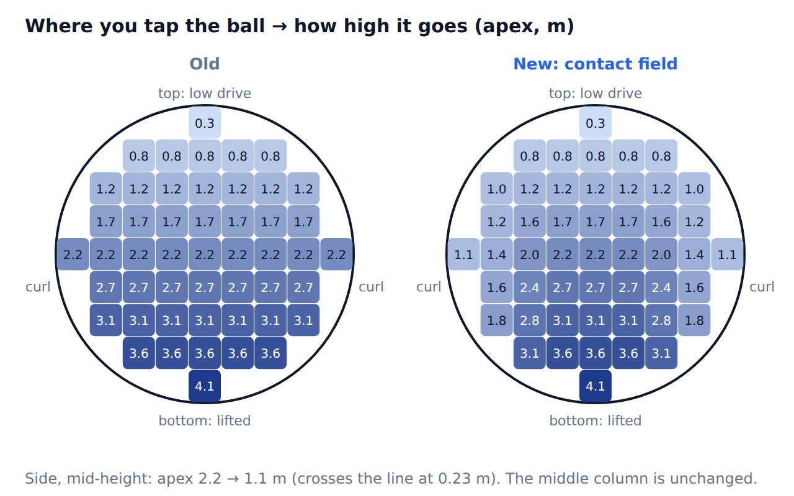
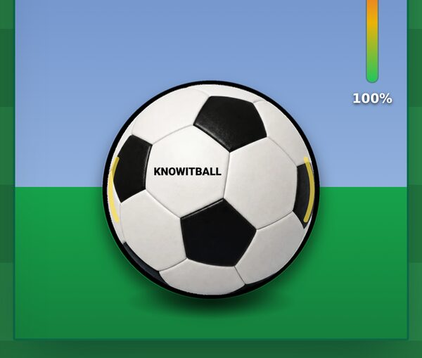
A soft shot straight at a 70 keeper went in 13% of the time. Long shots were too easy to save and parries dropped back into danger.
He misread where the ball would cross by about 0.5 m, then lunged late.
He reads the ball more truly as it nears, can change his mind, and takes balls within 0.9 m on his feet. Fewer parries drop back in front of goal (a 40-rated keeper 70% → 50%, a 95-rated 45% → 30%). Switch: Keeper feel (turns Keeper pro on too).
| Save % of shots on target | All old | v0.15 three on | Oct 13 all new |
|---|---|---|---|
| Keeper 40 | 50 | 53 | 64 |
| Keeper 70 | 69 | 72 | 77 |
| Keeper 90 | 83 | 84 | 89 |
| Goals per shot v a 70 | 24.8% | 22.0% | 18.5% |
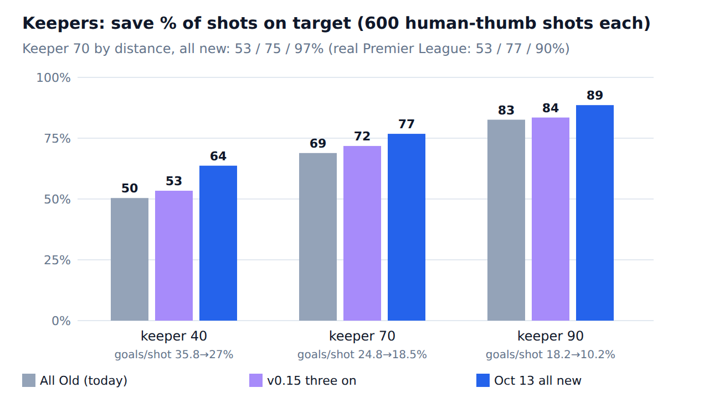
A team-mate put through shot from where he received the ball. Median 25.3 m, and 85% from 22 m or more, with nobody near him.
He shot the moment he got the ball, wherever he was.
A man in space beyond 18 m now carries it toward goal (6.2 m/s, up to 1.8 s) and shoots at about 13.5 m. He shoots sooner if a defender is within 2.6 m, the keeper within 5 m, or you order a lay-off. Switch: Team-mate shots.
Hitting the ball did not feel like connecting. No weight, no crunch, no reaction.
The strike and its effects were the same for a scuffed poke and a clean drive.
Impact scales with the real launch speed times how clean the contact was (clean 1, plain 0.75, sliced 0.45, scuffed 0.15). A look and sound change only: the physics are unchanged. Every amount is a dial on the Animations test page. Switch: Match feel.
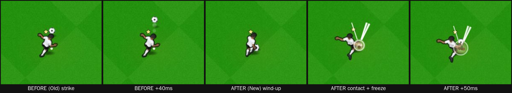
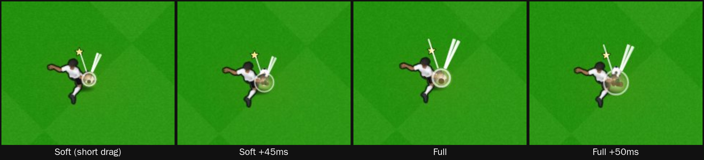
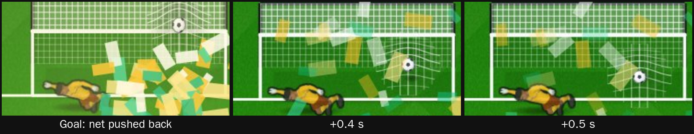
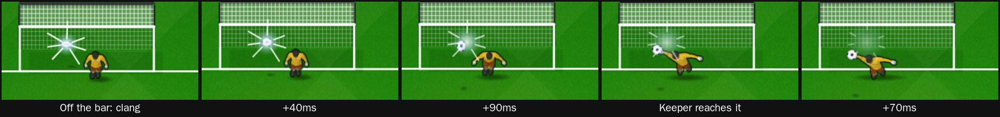
Before the update the ball just leaves. After: wind-up, freeze, flash, then it goes.
Look forThe short pause at contact, the flash and ring, and the lines behind the ball. Use ¼× to see the pause.
A clang off the woodwork, then a dive with a glove spark.
Look forThe flash at the bar, then the spark where the glove meets the ball.
The ball hits the net and the net moves.
Look forThe ripple spreading across the net while the confetti falls.
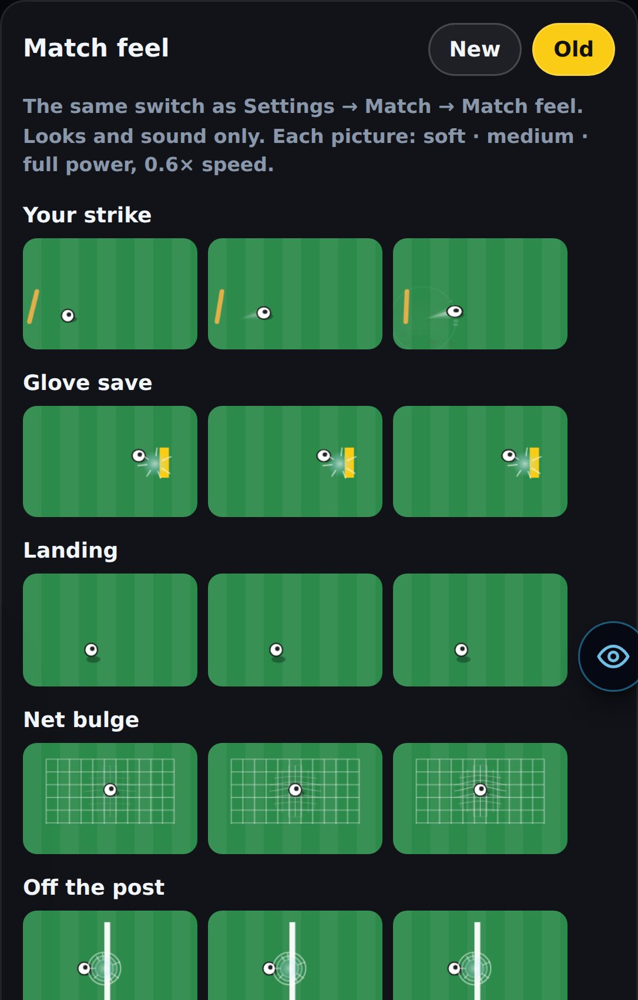
Five new switches are tedious to turn on one by one.
Settings → Match → “New 13 Oct · testing”: All new turns on Shot power, Contact field, Keeper feel, Team-mate shots and Match feel. All old puts the game back exactly. With everything Old, the existing seeded test results are identical.
Catches, parries, fumbles and get-ups come from the Animations New system (last round). Match feel adds the impact on top.
No page errors over real career matches (signed out, made-up squads, iPhone 13 size). Full-power strikes: 1 over the bar in 12 (a small sample). A side tap showed the curl marks. A keeper dive, a glove spark and a parry. A full prone dive to the post, with no freezing or teleporting. A team-mate scored after a pass.
Soft against full at goal, live. The wind-up, freeze and flash at a real frame rate. A side strike’s height, live. The keeper’s hop before the strike. The team-mate carry. The net ripple and clang live. Real players. Any sound (the test machine has no audio).
Type check clean. Star tests 340 of 342 pass; the two failures (assets3d, wembley3d) fail the same way on main without these changes. Build passes with the one-engine guard. The engine-edit warning fired: the changes in the core engine file (sensitive) are all behind the new switches.
Needs a review by Leo, Harry and Mikey. The numbers are simulations.
65–91% of their shots are on target and 30–48% score. Real football is about 35% on target and 10–15% scored.
The run animation during the carry could slide. Not seen.
Not visible in the playtest stills. Check on your phone.
No audio on the test machine. Judge them on a phone.
The v0.15 switches (Match camera, Ball physics, and others) are separate from this box.
At 100 power, keep 96 km/h, go higher (about 100), or lower (about 88)?
With everything new, goals per shot against a 70 keeper fall from 24.8% to 18.5%. OK or too low?
Should team-mates miss more? Yes or no. And was “teammates shooting sometimes” what you meant, or did you mean something else?
Is the freeze plus wind-up (about 165 ms at full power) punchy or laggy? Is the flash big enough? Is the buzz strong enough?
Turn the update on by default for everyone: yes, some of it, or not yet?
Changed: tighter match camera (empty grass 39% → 28%) · late-sub score matches the scoreboard · Keeper pro built from a full Premier League season · shots whose height follows contact, with a spread cone and contact grades · knuckleball and power shot · believable 90 minutes and a live radar (13 → 24 shots a match) · dribble duels that need timing (take-ons won 76% → 46%) · real ball physics (off).
Still open from this version: mostly not seen on a phone · a full tournament not played on screen · tight angles and volleys score too often (21% vs real 8%; 32% vs 10%).
Fixed: empty-pitch camera (players fill 11% → 51%) · league account named after your division · full-length goal videos · lower-league clubs winning Europe · posts with holes · renewals past the wage cap. Added: Find a new club · January moves · international career and tournaments · the world ages · a 3D Ballon d'Or night · 35 → 136 achievements · side-on camera (off).
Still open from this version: money decisions for Harry and Mikey · a tournament not seen on screen (still open).
Changed: good passers lay it off before your runner goes offside (14% → 4% offside) · through-balls reach the runner (14% → 48%). Added: a HIGHLIGHTS video after every match, pinned on top and made first · dev tools (any club, any player).
Still open from this version: a smart lay-off not yet seen on screen.
Added: a two-man commentary box (78 lines, new voice) · videos made in the background, playing as you scroll · players the right size · 3 new cameras, a TikTok edit, 3 new video accounts · videos of other clubs' goals.
Numbers: 9 → 78 commentary lines · 17 → 29 goal videos in 30 test matches · 270 tests.
Still open from this version: not heard on an iPhone · England tab videos not seen in the real game.
Added: crowd, kick, net and a commentator on goal videos · a speaker button (remembered) · sound inside a saved video · 9 commentator lines on the Sound Board.
Numbers: crowd ~3× louder at the goal · 0.2 s to mix · 267 tests.
Still open from this version: the voice (replaced in v0.12) · no names · not heard on an iPhone.
Added: every goal recorded as you play · real goal videos in the feed from three cameras · highlights reels · Save video · Goal Replays play the recording.
Numbers: 7–15 KB a goal · 266 tests.
Added: one-hand keeper saves, catches, parries and fumbles · team-mates take touches and shoot, pass, head, block and clear with their own legs · the Animations test page and its dials · Settings → Look → Animations: New | Old.
Fixed: a caught ball stayed where the keeper stood while he slid away.
Numbers: outcome counts identical over 5,200 seeded chances (a look-only change).
Still open from this version: the 3D keeper has no catch-hold or get-up · a caught ball can sit slightly off the gloves in the classic view · strikes may still be subtle on a phone · four questions for you on that page.
Changed: every career is 20 seasons (no "Do you go again?" from 33) · the career overview is the end screen.
Added: "Final season" warning after season 19 · "The final whistle" after season 20 · the Hall of Fame on the title screen · the new All seasons page, with a New | Old switch.
Fixed: the last season's Ballon d'Or and awards were never counted · a season's row named the wrong club after a summer move · three playtest finds.
Numbers: 20 seasons · 0 careers lost by starting again · 108 → 15 KB per Hall career · 246 tests.
Still open from this version: star_hall_of_fame.sql to run · the world does not age.
Fixed: trial free kicks and penalties too hard · five-a-side keepers never dived · no way back from several screens · Goalie Mode scrolled.
Added: dribble passes with green/amber/red rings · knuckleball, power shot and keeper howlers (test match only) · New / Old switches for keepers and dribble runs.
Numbers: top corners v a 90 keeper 26% → 43% · trial free kicks 36% → 48% · 243 tests.
Still open from this version: listed under Known issues above.
Fixed: five-a-side could freeze solid mid-match. Added: dev cheats for testing · real extra power for owning your own club.
Fixed: Goalie Mode's pitch never drew. Added: other players on the pitch · penalty · free kick with a real wall.
Fixed: the aim sat about 0.42 m from the cursor. Added: first-time strike · near/far post · shot names.
Added: Goalie Mode in the Casino · a stadium behind the goal.
Fixed: scoring was halved · chances match their own name. Added: Simulate · up to 60 versions per chance type.